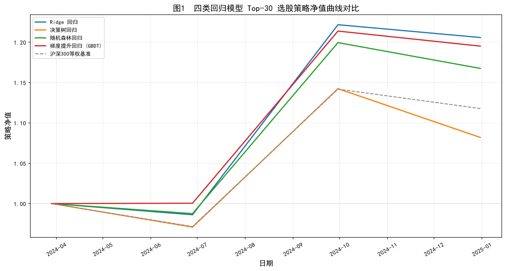
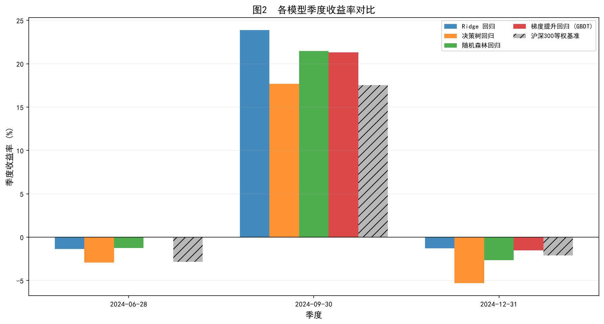
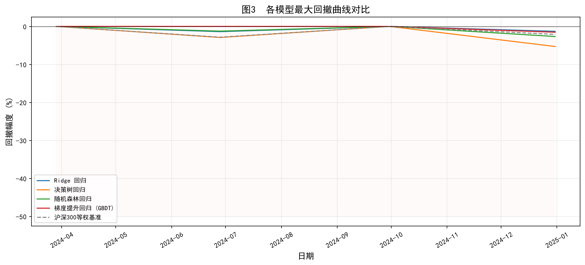
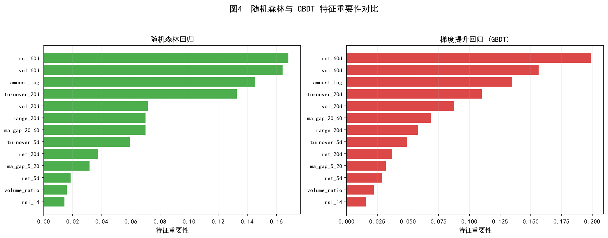
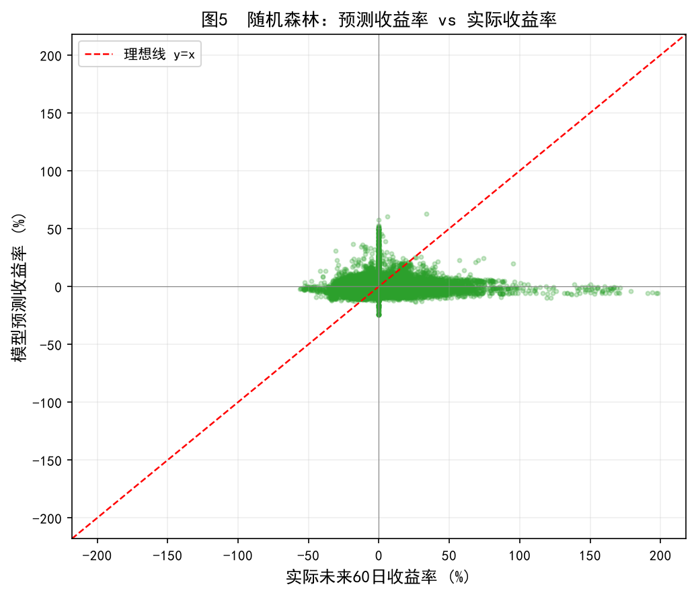

回归预测 · Top-30 横截面选股 · 季度再平衡 · 多模型对比
数据集 & 模型配置
| 模型 | 训练集R² | 测试集R² | 测试集MSE | 方向准确率 |
|---|---|---|---|---|
| Ridge 回归 | 0.0518 | -0.1013 | 0.0391 | 40.22% |
| 随机森林回归 | 0.2289 | -0.1590 | 0.0411 | 36.37% |
| 梯度提升回归 (GBDT) | 0.2722 | -0.1799 | 0.0419 | 38.42% |
| 决策树回归 | 0.1108 | -0.2401 | 0.0440 | 32.65% |
2024 年季度再平衡策略：Top-30 等权选股 vs 沪深300等权基准
| 模型 | 累计收益 | 年化收益 | 夏普比率 | 最大回撤 | 季度胜率 |
|---|---|---|---|---|---|
| Ridge 回归 | 20.58% | 28.34% | 0.9042 | -1.39% | 33.3% |
| 随机森林回归 | 16.75% | 22.93% | 0.7731 | -2.66% | 33.3% |
| 梯度提升回归 (GBDT) | 19.51% | 26.82% | 0.9720 | -1.54% | 66.7% |
| 决策树回归 | 8.19% | 11.07% | 0.3588 | -5.30% | 33.3% |
| 沪深300等权基准 | 11.77% | 16.00% | 0.6058 | -2.85% | 33.3% |
四类模型与基准在 2024 年测试期的累计净值走势

图1：2024 年 Q2 全模型亏损，Q3 强劲反弹，Q4 小幅回调。Ridge 和 GBDT 净值曲线始终位于基准上方，证明模型选股具有有效超额收益。
各模型在 2024 年三个持仓季度的收益表现

图2：Q2（2024-06-28）所有模型与基准均亏损；Q3（2024-09-30）所有模型跑赢基准，Ridge 以 +23.88% 领跑；Q4（2024-12-31）小幅回调，但 Ridge 和 GBDT 的亏损小于基准。
各模型从净值高点回落的幅度对比

图3：决策树回撤最大（-5.30%），Ridge 和 GBDT 回撤控制在 -1.39% 和 -1.54%，均优于基准的 -2.85%。
随机森林与 GBDT 的 13 个因子重要性排序

图4：两个模型重要性排序高度一致：ret_60d（长期动量）> vol_60d（长期波动率）> amount_log（成交额）> turnover_20d（换手率）> vol_20d。RSI 和量比排名最低。
随机森林在测试集上的预测散点分布

图5：散点围绕理想线 y=x 对称分布，但离散度很大，表明模型在预测具体收益率数值上精度有限，但排序信息仍具有选股价值。
实验发现与策略启示